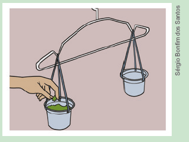

| Principais habilidades da BNCC | EF07MA02, EF07MA03, EF07MA05, EF07MA08, EF07MA13, EF07MA18 |
|---|---|
| Competências | CE8 , CG9 |
Igualdade
Para o estudo das equações do 1.º grau, seria interessante utilizar uma balança de dois pratos em sala de aula para que os alunos percebam a relação de igualdade. Caso a escola não possua uma balança de dois pratos, uma sugestão é utilizar um cabide com dois copos pendurados, um de cada lado, conforme mostra a imagem.
Os copos deverão ser transparentes para que os alunos possam visualizar os objetos colocados neles.
Em um dos copos, podem ser colocadas, por exemplo, quatro bolinhas, e no outro, uma bolinha solta e mais três dentro de um pacote que não seja transparente. Os alunos deverão identificar a quantidade de bolinhas que estão dentro desse pacote. Essa é uma atividade experimental que visa trabalhar a relação de igualdade. As bolinhas utilizadas deverão ser todas iguais e ter a mesma massa.
Várias situações iguais a essa podem ser propostas aos alunos, que poderão representá-las por meio de equações do 1.º grau, conforme o exemplo. Ao explorar atividades que utilizam uma balança de dois pratos,
149
EF07MA01
Capítulo 3 - Equações
Igualdade
Observe as balanças de dois pratos:
Balança A
Balança B
1. Troque ideias com um colega e respondam:

a) A balança A está em equilíbrio? Por quê? Sim, está em equilíbrio, porque em ambos os pratos há a mesma massa.
b) Podemos representar a situação da balança A por meio de uma sentença matemática utilizando o símbolo =, que indica uma igualdade. Escrevam essa sentença. 10 + 10 = 8 + 8 + 4
c) A balança B está em equilíbrio? Por quê? A balança não está equilibrada porque no prato da esquerda a massa é maior que no prato da direita.
d) Podemos representar a situação da balança B
por meio de sentenças matemáticas utilizando um símbolo de
desigualdade, como
≠, < ou >. Escrevam essas
sentenças.
10 + 10 ≠ 8 + 8 ou 10 + 10 > 8 + 8.
Os símbolos utilizados para representar uma sentença de desigualdade são:
(maior que); < (menor que); ≥ (maior ou igual a); ≤ (menor ou igual a)." />A expressão matemática que está à esquerda, em uma igualdade ou desigualdade, é chamada de 1.º membro e a que está à direita é denominada 2.º membro.
possibilita-se aos alunos que associem o equilíbrio a uma igualdade com o sentido de uma equivalência e, analogamente, o desequilíbrio a uma desigualdade.
De acordo com Tinoco (2008), o aluno com experiência apenas em aritmética, muitas vezes, considera o sinal de igual como um símbolo unidirecional, que precede uma resposta numérica, ou como um símbolo para “escreva a resposta”. A igualdade, nesse caso, é vista como tendo uma expressão do lado esquerdo e um número do lado direito. A ideia, muito utilizada na álgebra, de que o sinal de igualdade pode ser visto como um indicador de uma equivalência entre duas expressões, pode não ser percebida de imediato pelos alunos. É preciso enfatizar o fato de que o símbolo de igualdade é bidirecional (propriedade reflexiva e transitiva), tanto se exigindo a leitura adequada do mesmo (por exemplo: “2 mais 3 é igual a 5” em vez de “2 mais 3 dá 5”) como proporcionando aos alunos, desde os primeiros anos do ensino fundamental, experiências que envolvam igualdades dos tipos 5 = 2 + 3 = 1 + 4 = 2 + 3, etc.
149
Propriedades da igualdade
Se possível, mostre aos alunos a página do MEC, na qual apresenta as propriedades lógicas das equações: https://cutt. ly/LHQqY7c, e depois, proponha outros exemplos para que verifiquem as propriedades.
150
EF07MA01
EF07MA13
EF07MA15
EF07MA16
EF07MA18
Propriedades da igualdade
Note que para toda igualdade temos algumas propriedades válidas:
- Propriedade reflexiva
Para qualquer número racional x, temos que x = x.
Exemplo: 5 = 5.
- Propriedade simétrica
Para quaisquer a e b, temos que, se a = b, então b = a.
Exemplo: 5 + 8 = 13 e 13 = 8 + 5.
- Propriedade transitiva
Para quaisquer a, b e c, se a = b e b = c, então a = c.
Exemplo: 5 + 8 = 13 e 13 = 10 + 3, então 5 + 8 = 10 + 3.
Princípios de equivalência das igualdades
- Princípio aditivo
A balança está em equilíbrio.
Representamos essa igualdade por:
6 + 6 + 6 = 9 + 9
Vamos acrescentar 2 kg em cada um dos pratos dessa balança.
A balança continua em equilíbrio, pois acrescentamos a mesma massa em ambos os pratos. Assim, temos uma nova igualdade:
6 + 6 + 6 + 2 = 9 + 9 + 2
Ao adicionar um mesmo número aos dois membros de uma igualdade, encontramos uma nova igualdade.
Proponha aos alunos que construam uma balança de pratos para simular algumas situações e escrevam as sentenças matemáticas.
Para confeccioná-la são necessários: cabide, barbante e dois potes plásticos com três furos na borda. Conforme a imagem a seguir:
151
EF07MA01
- Princípio multiplicativo
A balança está em equilíbrio.
Representamos essa igualdade por:
6 + 4 = 10
Agora, vamos dobrar a quantidade de massa em cada um dos pratos dessa balança.
A balança continua em equilíbrio, pois dobramos a mesma quantidade de massa em ambos os pratos. Temos, portanto, uma nova igualdade:
(6 + 4) ∙ 2 = 10 ∙ 2
Ao multiplicar os dois membros de uma igualdade por um mesmo número, diferente de 0 (zero), encontramos uma nova igualdade.
ENCONTRE SOLUÇÕES
1. Em seu caderno, copie o quadro abaixo e complete-o.
2. Oralmente, identifique qual propriedade foi aplicada em cada uma das igualdades.
a) 20 + z = 2 → 2 = 20 + z Simétrica.
b) 15 = a → a = 15 Simétrica.
c) a + b = 23 e 23 = x, então a + b = x Transitiva.
d) x - 32 = y + 10 → y + 10 = x - 32 Simétrica.
e) x = 56 e 56 = y, então x = y Transitiva.
Encontre soluções
Atividade 3
Divida os nove cubos em três grupos de três cubos. Coloque três cubos em cada prato. Se a balança permanecer em equilíbrio, o cubo de menor massa estará no grupo que não foi pesado. Então, escolha dois cubos do grupo que não foi pesado. Se a balança permanecer em equilíbrio, o cubo de menor massa será o que não está na balança. Caso a balança não fique em equilíbrio, o cubo de menor massa será o que está no prato mais alto.
Atividade 4
Podemos resolver esta atividade da seguinte forma: em um prato, serão colocadas as caixas com 20 e 60 esferas; no outro, as caixas com 30 e 50 esferas. Se a balança permanecer em equilíbrio, a esfera terá sido retirada da caixa em que havia 40 esferas. Se houver desequilíbrio, serão pegas as caixas do prato mais alto. Supondo que as caixas de 30 e 50 esferas estavam no prato mais alto, então a esfera foi retirada de uma dessas caixas. Para a 2.ª pesagem, a caixa de 50 esferas será colocada em um prato e a de 30 esferas, no outro prato com a de 20 esferas. Se o prato que contém a caixa de 50 esferas ficar mais alto, a esfera terá sido retirada. Se o prato que contém as caixas de 20 e 30 esferas ficar mais alto, a esfera terá sido retirada da caixa de 30 esferas.
Atividade 6
a) Ele deve escolher duas moedas quaisquer e colocar cada uma delas em um dos pratos da balança. Se a balança ficar equilibrada, a moeda não escolhida é a leve. Se a balança não ficar equilibrada, então o prato mais alto indicará a moeda mais leve.
b) Ele deverá dividir as 9 moedas em três grupos de três e pesar dois quaisquer desses grupos. Se a balança ficar equilibrada, ele saberá que a moeda mais leve está
152
EF07MA01
3. Há nove cubos visivelmente iguais, mas um deles é feito de um material diferente, mais leve. Todos os outros cubos têm a mesma massa. Usando uma balança de dois pratos, como podemos descobrir, em duas pesagens, qual é o cubo de material diferente?
4. Duzentas esferas de mesma massa e cor foram distribuídas em cinco caixas diferentes, com 20, 30, 40, 50 e 60 esferas em cada uma. Uma esfera foi retirada de uma das caixas. Usando uma balança de dois pratos, como podemos descobrir, em duas pesagens, de qual caixa a esfera foi retirada?

5. Uma balança de dois pratos está em equilíbrio. Num prato, há 3 bolas azuis e 1 bola amarela e, no outro, 12 bolas verdes e 1 bola amarela. Nessas condições, a massa de 1 bola azul equivale à massa de quantas bolas verdes? 4 bolas verdes.

6. (OBMEP) Pesando moedas.
a) João possui três moedas e uma balança de dois pratos. Ele sabe que exatamente uma das moedas é mais leve que as demais, sendo que as outras duas possuem o mesmo peso. Como ele pode descobrir qual é a moeda mais leve com uma única pesagem?
b) João agora possui nove moedas e ele sabe novamente que exatamente uma delas é mais leve que as demais. Como ele pode descobrir a moeda mais leve com exatamente duas pesagens, se as demais possuem o mesmo peso?
c) João juntou mais duas moedas normais à sua coleção e passou a ter 11 moedas. Depois de juntá-las, ele não conseguiu lembrar quais eram as moedas novas. Como ele poderá agora descobrir a mais leve com três pesagens?
no grupo não escolhido. Se ela não ficar equilibrada, a moeda mais leve estará no prato mais alto. Em qualquer caso, ele pode restringir a busca para um grupo de três moedas. Utilizando o raciocínio do item anterior, com somente mais uma pesagem ele descobrirá a moeda mais leve.
c) Há várias maneiras de se resolver esta situação. Uma maneira seria ele dividir as moedas em três grupos contendo as quantidades: 5, 5 e 1. Após realizar uma pesagem entre os primeiros dois grupos, caso a balança fique equilibrada, ele saberá que a moeda mais leve é a do último grupo. Caso contrário, ele deve dividir o grupo de 5 moedas do prato mais alto em três, com as seguintes quantidades: 2, 2 e 1. Efetuando-se uma pesagem com os dois primeiros grupos, caso o prato fique equilibrado, ele saberá que a mais leve é a moeda do último grupo. Caso contrário, basta ele efetuar a última pesagem entre as moedas do prato mais alto.
Equações
Ribeiro (2008) apresenta um panorama geral das contribuições advindas da história das equações para a história da Matemática. De acordo com o autor, atualmente, as grandes áreas em que a Matemática está dividida tiveram origem, em boa parte, em problemas envolvendo a busca pela solução de equações dos tipos mais variados.
O autor apresenta um estudo sobre as diferentes maneiras como a noção de equação foi concebida e tratada pelos estudiosos em cada época histórica. Resumidamente, tem-se:
► Babilônios e egípcios: trabalhavam com equações que, em sua maior parte, eram originárias de problemas de ordem prática. A noção de equação tinha basicamente um caráter pragmático, que, de forma intuitiva, igualava duas quantidades, com a finalidade de encontrar o valor da quantidade desconhecida. Na maior parte das vezes, a busca pelas soluções estava relacionada a equações particulares, para resolver problemas específicos, e os métodos utilizados estavam relacionados a ideias aritméticas sem a preocupação de se encontrar soluções gerais.
► Gregos: para eles as equações já eram concebidas de maneira diferente dos babilônios e egípcios, pois não estavam procurando resolver equações que tinham sido originadas de problemas de ordem prática. A noção de equação contemplava um caráter geométrico e de forma dedutiva, a resolução repousava em manipulações geométricas. Percebe-se que, mesmo com a mudança de concepção acerca da álgebra nesse período - de aritmética, nos babilônios e egípcios, para geométrica, nos gregos -, a busca pelas soluções ainda estavam relacionadas a equações particulares e não a métodos gerais.
► Árabes e hindus: trabalhavam tanto com equações originárias de problemas de ordem prática quanto com situações que recaíam em interpretações e manipulações geométricas. A noção de equação já tinha um caráter mais algébrico, mais generalista, pois passava de um catálogo de expressões que se sabia resolver para um catálogo de todas as formas canônicas possíveis. Percebe-se, então, uma preocupação na busca de formas canônicas, como fez al-Khwarizmi ao estabelecer todas as possibilidades para o que conhecemos por trinômios de grau não superior a dois. Por outro lado, Ommar Khayyam já tinha uma concepção de equação mais relacionada a um caráter geométrico, interpretando as soluções das equações como a intersecção de curvas geométricas.
153
EF07MA13
Equações
Veja a situação a seguir:
Na eleição para representante de turma do 7.º ano A, 46 alunos escolheram entre dois candidatos. O vencedor obteve 12 votos a mais que o outro candidato. Podemos representar essa situação por meio de uma igualdade. Para isso, vamos denominar x o número de votos do candidato perdedor.
1. Troque ideias com um colega e escrevam, em seus cadernos, a sentença matemática que representa essa situação. x + x + 12 = 46; 2x + 12 = 46
Equação é uma sentença matemática expressa por uma igualdade, em que existe pelo menos uma letra representando um número desconhecido.
As letras que representam o número desconhecido nas equações chamam-se incógnitas.
Veja os exemplos:
7x = 42
- y = 11 m
+ 1 =
84
3z = - 66
Atenção!
Nem toda sentença matemática representa uma equação. Veja alguns exemplos de sentenças que não são equações.
x + 5 < 3
4 + 2y > 7
6 + 5 = 11
Conjunto-universo e conjunto-solução
Situação 1
Reinaldo Rosa/Acervo da Editora
Podemos representar essa questão por meio de uma equação:
x + 37 = 50
Considerando o número natural 13 no lugar da incógnita, percebemos que a sentença se torna verdadeira. Portanto, o número 13 denomina-se solução ou raiz da equação.
► Europeus: equações eram vistas dentro de um sistema estrutural com propriedades e características bastante definidas. A equação é considerada em si própria, operando-se sobre ela mesma, com a finalidade de se encontrar soluções gerais. Após a descoberta das fórmulas gerais para resolução das equações do terceiro e quarto graus, há uma modificação no rumo das investigações, a nova questão que norteia as investigações passa para: será que existe algoritmo para resolver equações com grau superior a quatro? Nessa nova direção, as equações continuaram sendo tratadas com o mesmo caráter estrutural, até que Galois encerra a discussão fornecendo condições de se decidir quando essas equações são solúveis por radicais.
O estudo das equações algébricas contribui de forma significativa para o aparecimento da chamada Álgebra Moderna.
Veja no seguinte quadro, o resumo do desenvolvimento dos conhecimentos e teorias de equação ao longo do tempo, elaborado por Ribeiro (2008, p. 76-77):
154
EF07MA01
O conjunto formado pelo número natural 13 é chamado de conjunto-solução de uma equação e representado por S = {13}.
Nessa situação, a incógnita deve ser um número natural. Os possíveis valores que a incógnita x pode assumir denomina-se conjunto-universo (U), nesse caso representado pelo conjunto dos números naturais (N). Logo, U = N.
Situação 2
Para verificar se um número é, ou não, solução de uma equação, basta substituirmos a incógnita pelo número dado.
Calculamos o valor numérico de cada membro e verificamos se a sentença é verdadeira.
Para x = 8, temos:
5x + 3 = 7x - 21
5 ∙ 8 + 3 = 7 ∙ 8 - 21
40 + 3 = 56 - 21
43 = 35
A sentença é falsa.
Para x = 12, temos:
5x + 3 = 7x - 21
5 ∙ 12 + 3 = 7 ∙ 12 - 21
60 + 3 = 84 - 21
63 = 63
A sentença é verdadeira.
Portanto, o número 12 é solução da equação 5x + 3 = 7x - 21, ou seja,
S = {12}.
155
EF07MA01
Equações equivalentes
As balanças abaixo, que contêm cubos de mesma massa, estão em equilíbrio.
Balança A
Balança B
1. Troque ideias com um colega e escrevam as equações que representam as igualdades presentes na balança A e na balança B. 3y + 10 = 20 + y; 2y + 10 = 20
a) Comparando as duas balanças, o que é possível perceber em relação aos cubos e pesos que foram colocados em cada uma delas? Comparando as duas balanças é possível perceber que a balança B possuí um cubo a menos em cada prato.
b) Calculando mentalmente, qual é o valor da massa de cada cubo? 5 kg
c) Esse valor que vocês encontraram é a solução das equações representadas para a balança A e para a balança B? Sim.
As equações 3y + 10 = 20 + y e 2y + 10 = 20 são equivalentes, pois apresentam o mesmo conjunto-solução. Observe:
3y + 10 = 20 + y
3y + 10 - y = 20 + y - y ⟵ Vamos adicionar −y a ambos os membros
(princípio aditivo).
2y + 10 = 20
2y + 10 - 10 = 20 - 10 ⟵ Vamos adicionar -10 a ambos os membros
(princípio aditivo).
2y = 10
1/2 ∙ 2y = 1/2 ∙ 10 ⟵ Para encontrar o valor de y, vamos
multiplicar por 1/2 ambos os membros (princípio multiplicativo).
y = 5 ⟵ Equação em sua forma mais simples.
As equações 3y + 10 = 20 + y, 2y + 10 = 20, 2y = 10 e y = 5 são equivalentes, pois apresentam o mesmo conjunto-solução, ou seja,
S = {5}.
O objetivo da apresentação desse breve histórico é oferecer ao professor subsídios sobre a história da Matemática, para que as atividades a ela relacionadas possam ser exploradas com os alunos em sala de aula. É possível apresentar a eles, por exemplo, alguns fatos e a respectiva época em que eles ocorreram para situá-los na linha do tempo.
Encontre soluções
Atividade 7
Para resolver esta situação, pode-se iniciar descobrindo o “peso” de cada esfera por meio da terceira balança. Para isso, vamos representar:
e → esfera
c → cubo
p → paralelepípedo
Da terceira balança, temos: 4e = 8.
Pelo princípio multiplicativo, temos 1/4 . 4 e = 1/4 . 8 ∴ e = 2.
Portanto, o “peso” de cada esfera é 2 kg.
Da segunda balança, temos: 4 + c = 5c.
Pelo princípio aditivo, temos: 4 + c - c = 5c - c ∴ 4 = 4c.
Pelo princípio multiplicativo, temos: 4 . 1/4 = 4c . 1/4 ∴ c = 1
Portanto, o “peso” de cada cubo é 1 kg.
Da primeira balança, temos: 2p = 4 + 2 ∴ 2p = 6.
Pelo princípio multiplicativo, temos: 1/2 . 2p = 1/2 . 6 ∴ p = 3.
Portanto, o “peso” de cada paralelepípedo é 3 kg.
156
EF07MA01
ENCONTRE SOLUÇÕES
1. Identifique, nas sentenças abaixo, as que representam uma equação e copie em seu caderno.
a) X 5x + 7 = 23
b)X92 - 4z = z + 1
c) x + 12 ≠ 20
d)X 6m - 3 = m - 21
e) 32 + y > 8
f) 75x + 3x < 34 - 10x
2. O número 21 é a solução de que (quais) equação(ões)?
a) X 3x + 4 = 67
b) 3x - 4 = 134
c) X 6x - 134 = -8
3. Verifique se 1 é a raiz da equação
4x = 2x + 2.
É raiz, pois 4 = 4.
4.
Aplicando o princípio aditivo, encontre uma equação equivalente a
m + 7 = 2m - 3, na sua forma mais simples.
x = 10
5.
Aplicando o princípio multiplicativo, encontre uma equação
equivalente a
8x = 24, na sua forma mais simples.
x = 3
6. Dos pares de equações apresentados abaixo, quais são equivalentes?
a) 3y + 5 = y + 2 e 3y + 3 = y + 1
b) X x + 9 = 14 e x + 11 = 16
c) X 2x - 1 = 7 e 2x = 8
d) 4a - 8 = 0 e 4a + 8 = 0
e) 2y = 1 e 6y = 2
7. Observe as balanças abaixo e descubra as massas do cubo, da esfera e do paralelepípedo, sabendo que os objetos iguais apresentam a mesma massa. Cubo: 1 kg; esfera: 2 kg; paralelepípedo: 3 kg.
![Três Ilustrações de balança em equilíbrio. Cada balança possui dois pratos. A primeira tem no prato da esquerda, dois pesos representados por retângulos rosas. No prato da direita, dois pesos representados por duas bolas pretas e mais dois pesos representados por dois cubos amarelos.
A segunda tem no prato da esquerda, dois pesos representados por duas bolas pretas e um cubo amarelo. No prato da direita, cinco pesos representados por cubos amarelos.
A terceira tem no prato da esquerda, quatro pesos representados por bolas pretas. No prato da direita, três pesos: um de 7kg e dois de 500 gramas.](../../resources/images/unidade5/53.PNG)
8. Verifique se 1/2 é a raiz da equação
4x + 5 = 2x - 2.
Resolvendo equações com uma incógnita
Nesse momento, retome com os alunos as fases para se resolver problemas:
Explique também que para se resolver as equações, devemos lançar mão da propriedade reflexiva, da propriedade simétrica, da propriedade transitiva, do princípio aditivo e do princípio multiplicativo.
157
EF07MA05
Resolvendo equações com uma incógnita
Situação 1
Lucas aproveitou as férias para pintar a sua casa. Ele gastou um total de R$ 695,00 na compra de tintas e pincéis. Lucas deu R$ 120,00 de entrada e vai pagar o restante em 5 prestações iguais. Qual é o valor de cada prestação?
Vamos chamar de x o valor de cada prestação.
Podemos representar a situação acima por meio da equação:
5x + 120 = 695
Resolvendo a equação, podemos obter o valor de cada prestação. Observe:
5x + 120 = 695
5x + 120 - 120 = 695 - 120 ⟵ Vamos adicionar -120 a ambos os
membros (princípio aditivo).
5x = 575
1/5 ∙ 5x = 1/5 ∙ 575 ⟵ Vamos multiplicar por 1/5 ambos os membros
(princípio multiplicativo).
x = 115
O valor de cada prestação é de R$ 115,00.
Situação 2
Vamos determinar o conjunto-solução da equação 5 - 7x = -6x + 8, sendo U = Q.
Aplicaremos os princípios das igualdades para resolver a equação.
5 - 7x = -6x + 8
5 - 7x - 5 = -6x + 8 - 5 ⟵ Vamos adicionar -5 a ambos os membros (princípio aditivo).
-7x = -6x + 3
-7x + 6x = -6x + 6x + 3 ⟵ Vamos adicionar 6x a ambos os membros (princípio aditivo).
(-1) ∙ (-x) = (-1) ∙ 3 ⟵ Vamos multiplicar por -1 ambos os membros (princípio multiplicativo).
x = -3
Como -3 ∈ Q, temos que S = {-3}.
Situação 3
Nesta situação, apresentamos uma na qual há a aplicação da propriedade distributiva não destacada na resolução de equações. Nesse sentido, comente com os alunos que a multiplicação de um número por uma soma é igual à soma das multiplicações desse número por cada uma das parcelas. Se julgar necessário, faça alguns exemplos sem a incógnita. Por exemplo:
5 (2 + 3) = 5 · 2 + 5 · 3.
158
Situação 3
Sendo x um número racional, vamos resolver a equação:
Como 21/ 4 ∈ Q, temos que S = 21/4.
Situação 4
Vamos resolver a equação x/2 + 3 = x/4 , sendo U = Q.
Encontre soluções
Atividade 1
a) x + 4x + 1 + 3x + 1 + 5x + 2 + 3x = 16x + 4
b) 16x + 4 = 164
16x = 164 - 4
16x = 160
x = 10
Atividade 2
a) TF = TC · 1,8 + 32
TF = 37 · 1,8 + 32
TF = 66,6 + 32
TF = 98,6°F
b) TF = TC · 1,8 + 32
41 = 1,8 TC + 32
1,8TC = 41 - 32
1,8TC = 9
TC = 5°C
Atividade 3
a) 3x + 10 = 31
3x = 31 - 10
3x = 21
x = 7
S = {7}
b) 22 - 5x = x + 34
-5x - x = 34 - 22
-6x = 12
x = -2
S = {-2}
c) 18 - x = x - 2
-2x = -2 - 18
-2x = -20
x = 10
S = {10}
d) - 8y + 5 = - 67
-8y = -67 - 5
-8y = -72
y = 9
S = {9}
e) 12x + 3 - 2x = 8
10x = 8 - 3
10x = 5
x = 1/2
s={1/2}
159
EF07MA01
ENCONTRE SOLUÇÕES
1. O polígono ABCDE é um pentágono cujas medidas estão indicadas na figura.
a) Escreva uma expressão algébrica que represente o perímetro desse pentágono. 16x + 4
b) Sabendo que o perímetro é igual a 164 cm, qual é o valor de x? 10
2. No Brasil, as temperaturas são medidas em graus Celsius (ºC).
Alguns países utilizam o grau Fahrenheit (ºF) para medir as temperaturas. Podemos converter a temperatura de uma escala para a outra por meio da equação:
TF = TC ∙ 1,8 + 32
TF: temperatura na escala Fahrenheit.
TC: temperatura na escala Celsius.
a) A temperatura normal de um ser humano é de aproximadamente 37ºC. Qual é essa temperatura em graus Fahrenheit? 98,6ºF
b) Um termômetro localizado na cidade de Nova Iorque marca 41ºF. Qual é essa temperatura em graus Celsius? 5ºC
3. Encontre o conjunto-solução das equações com uma incógnita, sendo U = Q
a) 3x + 10 = 31 S = {7}
b) 22 - 5x = x + 34 S = {-2}
c) 18 - x = x - 2 S = {10}
d) - 8y + 5 = -67 S = {9}
e) 12x + 3 - 2x = 8 s ={1/2}
f) 4y + 7 = 6y + 14 s ={-7/2}
4. O perímetro de um triângulo é de 36 cm. As medidas dos lados são expressas por três números inteiros e consecutivos. Quanto medem os lados desse triângulo? 11 cm, 12 cm e 13 cm.
f) 4y + 7 = 6y + 14
4y - 6y = 14 - 7
-2y = 7
y = - 7/2
S = {-7/2}
Atividade 4
Medidas dos lados:
x; x + 1; x + 2.
x + x + 1 + x + 2 = 36
3x = 36 - 3
3x = 33
x = 11
Os lados medem 11 cm, 12 cm e 13 cm.
Atividade 5
x + x + 15 + x + 20 = 59
3x = 59 - 15 - 20
3x = 24
x = 8
No primeiro dia, ele correu 8 km; no segundo, 23 km; e no terceiro, 28 km.
Atividade 6
b) 9 - 2(2x - 3) = - 5(x + 1)
9 - 4x + 6 = -5x - 5
5x - 4x = -5 - 9 - 6
x = -20, S = {-20}
c) 4y + 10 - (2y + 8) = 6(y - 3)
4y + 10 - 2y - 8 = 6y - 18
2y - 6y = 8 - 10 - 18
-4y = -20
y = 5, S = {5}
d) 2(z - 1) - 3(z - 2) = 12
2z - 2 - 3z + 6 = 12
-z = 12 + 2 - 6
-z = 8
z = -8, S = {-8}
e) 10 - 5(x - 3) + 2x = 4(x + 1)
10 - 5x + 15 + 2x = 4x + 4
-5x + 2x - 4x = 4 - 10 - 15
-7x = -21
x = 3, S = {3}
Atividade 9
160
EF07MA01
5. Júlio iniciou um treinamento para participar da maratona que acontecerá em sua cidade. No primeiro dia, ele correu x km; no segundo, (x + 15) km; e, no terceiro, (x + 20) km. Sabendo que Júlio percorreu um total de 59 km nos três dias, quantos quilômetros ele correu em cada dia?
8 km, 23 km e 28 km.6. Encontre o conjunto-solução das equações com uma incógnita, sendo U = Q
a) 3(b + 2) - (b - 1) = 0 S= {-7/2}
b) 9 - 2(2x - 3) = -5(x + 1) S= {-20}
c) 4y + 10 - (2y + 8) = 6(y - 3) S= {5}
d) 2(z - 1) - 3(z - 2) = 12 S= {-8}
e) 10 - 5(x - 3) + 2x = 4(x + 1) S= {3}
f) 3(m - 8) = 5(m + 7) - 4m S= {59/2}
g) 9y - 2(y + 4) = 10y - 6(2 - y) S= {4/9}
7. A área de um retângulo é de 60 cm2. Sabendo que a altura é igual a 6 cm e a base é igual a x + 5, qual o valor de x? x = 5
8. Sendo x um número racional, resolva no caderno as equações abaixo.
a) x/2 - x/5 = 8 + x S = {-80/7}
b) 1/4 + 3x + x/2 = x- 1 S = {-1/2}
c) x-2/3 + x+2/3 = 6 + x S = {-18}
d) x+1/4 = x - x+2/3 S = {11/5}
e) x/2 + x-1/6 = 2/3 - 4+x/2 S = {-1}
f) 4x+4/5 - x-10/10 = 3 S = {12/7}
g) x-3/7 + x+2/14 = 2/7 - x S = {8/17}
9. Em um quadrado mágico, a soma das linhas é igual à soma das colunas e à soma das diagonais.
a) Encontre os números que formam esse quadrado mágico, sabendo que a soma das linhas, das colunas e das diagonais é igual a 18. a = 5
b) Calcule os números que formam esse quadrado mágico. b = 3
10. Um retângulo possui a medida do comprimento igual ao triplo da medida da largura. Sabendo que o seu perímetro é igual a 64 cm, determine a área desse retângulo. 192 cm²
11. Descubra os números em que as crianças estão pensando.
Menina: o número pensado é 14.Menino: o número pensado é 6.
Atividade 7
6(x + 5) = 60
6x + 30 = 60
6x = 60 - 30
6x = 30, x = 5
Atividade 8
Atividade 10
Medida do comprimento: 3x.
Medida da largura: x.
3x + 3x + x + x = 64
8x = 64, x = 8 cm
Área: 8 ∙ 24 = 192 cm².
Atividade 11
Menina: x + x + 1 = x + 15
x = 14. O número pensado é 14. Menino:

O número pensado é 6.
Atividade 12
161
EF07MA01
12. Sendo U = Q, resolva as seguintes equações:
13. (UTFPR) A balança da figura a seguir está em equilíbrio. De um lado temos 8 peças de queijo e de outro lado 5 pesos de 1 kg cada. Com base nesses dados podemos afirmar que a massa de cada peça de queijo em gramas vale:
a) 650
b) X .625
c) 500
d) 475
e) 450
14. (OBMEP) Margarida viu no quadro-negro algumas anotações da aula anterior, um pouco apagadas, conforme mostra a figura. Qual é o número que foi apagado?
a) X 9
b)10
c)13
d)150
15. (OBMEP) A balança da figura está em equilíbrio, com bolas e saquinhos de areia em cada um de seus pratos. As bolas são todas iguais e os saquinhos também. O peso de um saquinho de areia é igual ao peso de quantas bolas?
a)1
b) X 2
c)3
d)5
e)6
f)t
16. Em seu caderno, elabore um problema que possa ser representado por uma equação do 1.º grau. Em seguida, peça a um colega que resolva o problema elaborado por você. Juntos, verifiquem se a resolução apresentada está correta. Resposta pessoal.
Atividade 13
8x = 5
x = 0,625 kg
Cada peça de queijo vale 625 gramas.
Atividade 14

Atividade 15
Representando-se por s a quantidade de saquinhos e e a quantidade de bolas, tem-se:
5s + 4e = 2s + 10e
Retirando-se 4 bolas de cada lado, tem-se:
5s = 2s + 6e
Retirando-se 2 saquinhos de cada lado, tem-se:
3s = 6e
Portanto, se 3 saquinhos correspondem a 6 bolas, tem-se que cada saquinho corresponde a 2 bolas.
162
EF07MA02 EF07MA18
Resolução de situações-problema por meio de equações
Situação 1
Bruno tem 1 ano a mais que Pedro. A soma das idades deles é igual a 15 anos. Qual é a idade de Bruno? E a de Pedro?
Representando a idade de Pedro por x, temos:
- idade de Pedro: x
- idade de Bruno: x + 1
Como a soma das idades é igual a 15 anos, a equação que representa essa situação é dada por:
x + x + 1 = 15
Resolvendo a equação, temos:
x + x + 1 = 15
2x + 1 = 15
2x + 1 - 1 = 15 - 1 ⟵ Vamos adicionar -1 a ambos os membros (princípio aditivo).
2x = 14
(1/2).2x = (1/2).14 ⟵ Vamos multiplicar por 1/2 ambos os membros (princípio multiplicativo).
x = 7
Portanto, Pedro tem 7 anos e Bruno, 8.
Situação 2
Marta gasta 20% do seu salário com aluguel, 30% com as faturas de água, luz, telefone e gás e sobram R$ 420,00 para as demais despesas. Qual é o salário mensal de Marta?
Vamos chamar de x o valor do salário de Marta.
20% de x → 20/100∙ x = 0,2x
Do mesmo modo:
30% de x → 30/100 ∙ x = 0,3x
Adicionando as despesas ao valor que sobra, descobrimos o salário de Marta.
0,2x + 0,3x + 420 = x
163
EF07MA01
Logo, a equação que nos permite calcular o valor do salário de
Marta é
0,2x + 0,3x + 420 = x. Resolvendo-a, temos:
0,2x + 0,3x + 420 = x
0,5x + 420 = x
1/2x + 420 = x ⟵ Transformando o número decimal em fração.
-x + 1/2x + 420 = -x + x
-1/2x + 420 - 420 = 0 - 420 ⟵ Vamos adicionar -420 a ambos os membros (princípio aditivo).
-1/2x = -420
(-2).(-1/2x) = (-2) . (-420) ⟵ Vamos multiplicar por -2 ambos os membros (princípio multiplicativo).
x = 840
Portanto, Marta recebe R$ 840,00 por mês.
Encontre soluções
1. A balança abaixo está em equilíbrio. Admitindo que cada cubo tenha x gramas, escreva a equação que nos permite calcular a massa de cada cubo. 5x = 800
2. Escreva no caderno a equação que representa cada situação a seguir.
a) O dobro de um número, somado com sua quinta parte, é igual a 175. 2x + 1/5x = 175
b) A quarta parte de um número menos o seu triplo é igual a 195 mais esse número. 1/2x = 3x = 195 + x
c) Oito vezes um número y menos 35 é igual ao triplo desse número. 8y − 35 = 3y
Encontre soluções
Atividade 3
5m = m + 100
4m = 100
m = 25 g
Atividade 4
x + 4x = 45
5x = 45
x = 9
9 caixas de suco de maracujá e 36 caixas de suco de laranja.
Atividade 6
x + x + 44 = 126
2x = 126 - 44
2x = 82
x = 41
Os números são 41 e 85.
Atividade 7
Sendo x o número de meninas, temos:
Meninas: 24; meninos: 18; 7.° ano A: 42 alunos.
A parte da atividade 7, as frações atuam como operador (quando a fração transforma uma quantidade em outra), se preciso, faça a reta numérica juntamente com os alunos para visualizar as situações.
Aproveite a oportunidade para elaborarem outras situações sobre o assunto.
Atividade 8
A capacidade total do balde é de 10 litros.
164
EF07MA02
EF07MA18
3. Júlio tem 6 bolas de metal de mesma massa (m). Para calcular, Júlio colocou 5 bolas em um dos pratos de uma balança e a que restou no outro prato, com um cubo de massa igual a 100 g. Ele observou que os pratos da balança ficaram equilibrados. Calcule a massa (m), medida em gramas, de cada bola de metal. 5m = m + 100; m = 25 g.
4. Na prateleira de um supermercado, há caixas de suco de laranja e de maracujá, totalizando 45 caixas. O número de caixas de suco de laranja é o quádruplo do número de caixas de suco de maracujá. Quantas caixas de cada suco há na prateleira? 9 caixas de suco de maracujá e 36 caixas de suco de laranja.
5. Márcia disse: “Pensei em um número e subtraí 3 dele. Multipliquei o resultado por 4 e adicionei 2 ao novo resultado, obtendo 90”. Qual equação permite calcular o número em que Márcia pensou?
4(x − 3) + 2 = 906. A soma de dois números é 126. O maior deles supera o menor em 44 unidades. Quais são esses números? 41 e 85.
7. No 7.º ano A, o número de meninos é igual a 3/4 do número de meninas. Certo dia, faltaram 8 meninas e 2 meninos, ficando iguais as quantidades de meninas e meninos. Quantas meninas há nessa turma? E quantos meninos? Quantos alunos estudam no 7.º ano A? Meninas: 24; meninos: 18; 7.º ano A: 42 alunos.
8. Um balde estava totalmente cheio de água. Inicialmente, retirou-se 1/5 de sua capacidade total e, em seguida, mais 3 litros foram retirados. A quantidade de água que restou no balde corresponde à metade da sua capacidade total. Qual a capacidade total desse balde? 10 litros.
9. Numa pesquisa feita para saber a preferência dos habitantes de uma cidade em relação aos jornais A, B ou C, constatou-se que 2/5 dos entrevistados liam somente o jornal A, 1/3 lia apenas o jornal B e 232 liam somente o jornal C. Quantas pessoas foram entrevistadas? 870 pessoas
10.
Uma balsa cobra R$ 16,00 pela travessia de um veículo com hora
marcada e R$ 14,00 pela travessia de um veículo sem hora marcada.
Sabe-se que diariamente a balsa é utilizada por um número fixo de
12 veículos com hora marcada e por um número variável de veículos
sem hora marcada. Quantos veículos fizeram a travessia no dia em
que foi arrecadado a quantia de
R$ 402,00?
27 veículos.
11. Um agricultor cultiva feijão. Após a colheita, ele distribuiu as sacas colhidas da seguinte maneira: deu a metade ao proprietário das terras, 1/8 do total aos seus ajudantes e ficou com 1 200 sacas. Quantas sacas o agricultor colheu? 3 200 sacas.
Atividade 9
Foram entrevistadas 870 pessoas.
Atividade 10
192 + 14x = 402
14x = 402 - 192
14x = 210
x = 15 veículos sem hora marcada.
Total de veículos que fizeram a travessia nesse dia: 27 veículos.
Atividade 11
O agricultor colheu 3 200 sacas.
Atividade 12
x + 15 + x - 7 + x = 368
3x = 368 - 8
3x = 360
x = 120
Lucas recebeu R$ 135,00; Gabriel, R$ 113,00; e João, R$ 120,00.
Atividade 13

Marcos: R$ 48.000,00
William: R$ 16.000,00
Cássio: R$ 8.000,00
Atividade 14
Márcia: 3x
Filha de Márcia: x
3x + x + 12 = 72
4x = 72 - 12
4x = 60, x = 15
A idade atual de Márcia é 45 anos
Atividade 15
Diofante viveu 84 anos.
165
EF07MA01
12. Lucas tem R$ 15,00 a mais que João e Gabriel tem R$ 7,00 a menos que João. Juntos, totaliza em R$ 368,00. Quantos reais cada um tem? Lucas: R$ 135,00; Gabriel: R$ 113,00; João: R$ 120,00.
13.
O pai de Marcos, Cássio e William deixou uma herança no valor de
R$ 72.000,00, que será repartido entre eles da seguinte
forma: Marcos ficará com o triplo do valor de William, e Cássio
ficará com a metade do valor de William. Quanto cada um receberá
de herança?
Marcos: R$ 48.000,00; William: R$ 16.000,00; Cássio: R$
8.000,00.
14. Márcia tem o triplo da idade de sua filha. Daqui a 6 anos, a soma das idades das duas será igual a 72 anos. Qual a idade atual de Márcia? 45 anos
15. O matemático grego Diofante viveu no século III a.C. Segundo dizem, em seu túmulo, foi gravada uma inscrição que contava a sua vida e a idade com que morreu.
![Ilustração do túmulo. Na lápide a inscrição: Deus lhe concedeu ser um menino pela sexta parte de sua vida, e somando uma duodécima parte a isto cobriu-lhe as faces de penugem. Ele lhe acendeu a lâmpada nupcial após uma sétima parte, e cinco anos após seu casamento concedeu-lhe um filho. Ai! Infeliz, criança tardia; depois de chegar à metade da vida de seu pai, o Destino frio o levou. Depois de se consolar de sua dor durante quatro anos com a ciência dos números ele terminou sua vida.”
BOYER, Carl B. História da Matemática. São Paulo: Edgard Blücher, 1996. p. 121.](../../resources/images/unidade5/70.PNG)
- Quantos anos Diofante viveu? 84 anos.
16. (OBMEP) Um queijo foi partido em quatro pedaços de mesmo
peso. Três desses pedaços pesam o mesmo que um pedaço mais um peso
de 0,8 kg. Qual era o peso do queijo inteiro?
a)1,2 kg
b)1,5 kg
c) X 1,6 kg
d)1,8 kg
e)2,4 kg
Atividade 16
Vamos chamar de q o peso de cada pedaço de queijo. Dessa forma,
temos:
3q = 0,8 + q
2q = 0,8
q = 0,4
Cada pedaço de queijo pesa 0,4 kg. Como o queijo foi partido em
quatro pedaços iguais, o peso do queijo é igual a 4 ∙ 0,4 = 1,6 kg.